Developer Guide
Excaligen Developer Guide
Excalidraw File Generation via Python ✨
Excaligen bridges the gap between the fantastic diagram editor Excalidraw and algorithmic visualization. Excalidraw is well known for its beautiful, hand-drawn aesthetic.
If you want to generate Excalidraw-compatible files directly from Python, Excaligen is the tool for you. Visualize data structures, automated reports, and complex algorithmic patterns with minimal boilerplate.
Table of Contents
- Concepts & The First Sketch
- Shapes & Styles
- Connectors (Arrows)
- Typography (Text)
- Lines & Custom Shapes
- Images
- Groups & Frames
- Defaults
- Algorithmic Generation
Concepts & The First Sketch
The SceneBuilder
The heart of Excaligen is the SceneBuilder class. Think of it as your canvas and your toolbox combined.
Important: You should always create elements using the SceneBuilder methods (like .rectangle(), .arrow(), etc.). Do not instantiate element classes directly. The builder ensures everything is correctly initialized and tied to the diagram.
Hello World
Create a file named hello_world.py:
from excaligen.SceneBuilder import SceneBuilder
scene = SceneBuilder()
scene.text('Hello, World!')
scene.save('hello_world.excalidraw')
Executing this script produces a file ready for Excalidraw.

The Fluent API
Excaligen uses a "fluent" API style. This means you can chain method calls together to configure your elements concisely.
from excaligen.SceneBuilder import SceneBuilder
scene = SceneBuilder()
central_topic = scene.ellipse('Central topic').center(0, 0)
subtopic = scene.rectangle('Subtopic').center(350, 100)
scene.arrow('points to').bind(central_topic, subtopic)
scene.save('binding.excalidraw')
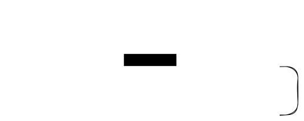
The next chapters will explain the API in detail. We will omit the imports and scene.save() calls in examples for brevity.
Shapes & Styles
Excalidraw is beloved for its hand-drawn feel. Excaligen gives you full programmatic control over this unique aesthetic.
Core Shapes
Excaligen exposes the core Excalidraw shapes:
- Rectangle:
scene.rectangle() - Ellipse:
scene.ellipse() - Diamond:
scene.diamond()
scene.rectangle('Rectangle').center(-150, 0)
scene.ellipse('Ellipse').center(0, 0)
scene.diamond('Diamond').center(150, 0)

Positioning
You can position elements using three methods:
center(x, y)position(x, y)orbit(center, radius, angle)
Center
center(x, y) places the geometric center of the element at (x, y).

Position
position(x, y) places the top-left corner of the element's bounding box at (x, y).
scene.rectangle('Rectangle 1').position(0, 0)
scene.rectangle('Rectangle 2').position(150, 0)
scene.rectangle('Rectangle 3').position(0, 120)

Orbit / Polar Coordinates
What if we want to place several elements around a central point? The orbit(center, radius, angle) method allows you to do that.
RADIUS = 150
SUBTOPICS = 6
scene = SceneBuilder()
central_topic = scene.ellipse('Central topic').center(0, 0)
for i in range(SUBTOPICS):
angle = i * 2 * math.pi / SUBTOPICS
scene.rectangle(f'Subtopic {i}').orbit(central_topic, RADIUS, angle)
scene.save('sandbox.excalidraw')

There is another variant of the orbit method - orbit(x, y, radius, angle) that allows you to specify the coordinates of the center instead of an element.
Rotation
You can rotate any element. Angles are in radians.

Shape Size
You can define the dimensions of a shape using the size() method. It accepts width and height.
scene.rectangle('Small').size(80, 64).center(0, 0)
scene.rectangle('Medium').size(100, 80).center(100, 0)
scene.rectangle('Large').size(150, 120).center(235, 0)

Styling
A diagram communicates through more than just shapes. The style tells a story.
Stroke Style
Control the line style with .stroke(). Options:
'solid''dashed''dotted'
scene.ellipse().center(-150, 0).stroke('solid')
scene.ellipse().center(0, 0).stroke('dashed')
scene.ellipse().center(150, 0).stroke('dotted')
Stroke Thickness
Adjust the line width with .thickness(). Options:
'thin'(1)'bold'(2)'extra-bold'(3)
scene.rectangle().thickness('thin')
scene.rectangle().thickness('bold')
scene.rectangle().thickness('extra-bold')

Fill Style
Choose how shapes are filled with .fill(). Options:
'solid''hachure'(sketchy lines)'cross-hatch'
scene.ellipse().center(-150, 0).background('gray').fill('solid')
scene.ellipse().center(0, 0).background('gray').fill('hachure')
scene.ellipse().center(150, 0).background('gray').fill('cross-hatch')

Roundness
Shapes can have sharp or rounded corners. Use the roundness() method to toggle between them. Note that this method is not applicable to the Ellipse element.
scene.rectangle('Rounded').roundness('round').center(0, 0)
scene.rectangle('Sharp').roundness('sharp').center(150, 0)
scene.diamond('Rounded').roundness('round').center(0, 100)
scene.diamond('Sharp').roundness('sharp').center(150, 100)

Sloppiness
Control the hand-drawn effect with .sloppiness(). Options:
'architect'(clean)'artist'(balanced)'cartoonist'(messy)
scene.rectangle().sloppiness('architect')
scene.rectangle().sloppiness('artist')
scene.rectangle().sloppiness('cartoonist')

Opacity
Control opacity/transparency with .opacity(0-100).
scene.ellipse().center(70, 0).background('gray').fill('cross-hatch')
scene.ellipse().center(0, 0).background('DarkGray').fill('solid').opacity(80)
Colors
So far we have only used the black/gray colors. But we can use any color we want. Excaligen supports multiple color formats:
- Named Colors:
"MidnightBlue","Tomato","MintCream". - RGB as a string (Hex Colors):
"#FF5733". - RGB:
scene.color().rgb(100, 149, 237). - HSL:
scene.color().hsl(200, 80, 60).
# Add a rectangle with a named color
(
scene.rectangle('Action')
.position(0, 0)
.color("BlueViolet")
.background("Lavender")
)
# Add an ellipse with RGB color as a string
(
scene.ellipse('Start')
.position(150, 0)
.color('#FF5733')
.background('#FFBD33')
)
# Add a diamond with HSL color
(
scene.diamond('Decision')
.position(300, 0)
.color(scene.color().hsl(120, 100, 25))
.background(scene.color().hsl(120, 100, 85))
)
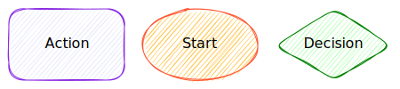
Advanced Color Manipulation
Look again at the previous example. A shape's color() method accepts either a string or a Color object.
Passing a string as e.g. 'Lavender' or '#FF5733' is the easiest way to set a color.
However, if you need more control, you can pass a Color object, that you can create using the scene.color() helper. This is useful for generating colors programatically. The color object exposes the rgb() and hsl() methods to create colors.
color_1 = scene.color().rgb(250, 120, 10)
color_2 = scene.color().hsl(200, 80, 60)
scene.rectangle('Color 1').color(color_1).background(color_1).center(0, 0)
scene.rectangle('Color 2').color(color_2).background(color_2).center(150, 0)

There are also methods lighten() and darken() to manipulate lightness of the colors, taking a percentage as an argument.
for i in range(5, 30, 5):
color = scene.color().rgb(250, 120, 10).darken(i)
(
scene.ellipse()
.center(i * 20, 0)
.size(80, 80)
.color(color)
.background(color)
.fill('solid')
)
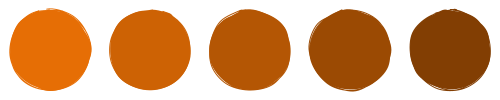
Using the HSL color space you can also manipulate the saturation and hue of the colors.
for i in range(0, 90, 10):
color = scene.color().hsl(200, 80 - i, 60)
(
scene.ellipse()
.center(i * 10, 0)
.size(80, 80)
.color(color)
.background(color)
.fill('solid')
)
color = scene.color().hsl(200 + i, 80, 60)
(
scene.ellipse()
.center(i * 10, 100)
.size(80, 80)
.color(color)
.background(color)
.fill('solid')
)
Connectors (Arrows)
Diagrams are about relationships. Arrow is a powerful element to express them.
Binding
The most robust way to connect elements is binding them by an arrow. When elements move, bound arrows follow.
source = scene.rectangle('Source').center(0, 0)
target = scene.rectangle('Target').center(120, 0)
scene.arrow().bind(source, target)
Labels
Arrows can have labels.
source = scene.rectangle('Source').center(0, 0)
target = scene.rectangle('Target').center(320, 0)
scene.arrow('My Label').bind(source, target)

Styling
You can adjust color, stroke style, thickness, and sloppiness in the same way as for shapes.
source = scene.rectangle('Source').center(0, 0)
target = scene.rectangle('Target').center(220, 0)
scene.arrow().bind(source, target).color('red').stroke('dashed').thickness('extra-bold')
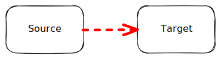
Arrowheads
Customize the start and end markers. Options are:
'arrow''bar''dot''triangle'None
y = 0
for arrow_head in [None, 'arrow', 'bar', 'dot', 'triangle']:
start_element = scene.ellipse().center(0, y).size(30, 30).color('gray')
end_element = scene.rectangle(f"{arrow_head}").center(120, y).size(100, 30).color('gray')
scene.arrow().bind(start_element, end_element).arrowheads(None, arrow_head).color('blue')
y += 50

You can of course use any combination of arrowheads, e.g. starting with a dot and ending with a triangle.
Path Styles
It's about how the arrow gets from A to B. Excalidraw supports direct, elbowed and freeform paths. Excaligen adds convenience methods to control the curved and arc paths. In summary, you can control the arrow path to achieve:
- Straight connection
- Elbow (orthogonal) connection
- Curved connection
- Arc connection
- Freeform connection
Straight Connection(Default)
A direct line between shapes, you saw it in the previous examples.
Elbow (Orthogonal) Connection
Elbow arrows provide a structured way to connect elements using only horizontal and vertical segments. This is ideal for complex diagrams like flowcharts or system architectures, as it helps avoid diagonal lines that can make a layout look cluttered or confusing.
You specify the exit direction from start and entry direction to end ('U', 'D', 'L', 'R') meaning up, down, left, right.
begin = scene.rectangle('Begin').center(0, 0).size(160, 70)
end = scene.ellipse('End').center(400, -200).size(130, 50)
scene.arrow().elbow('R', 'L').bind(begin, end)
scene.arrow().elbow('U', 'U').bind(begin, end)
scene.arrow().elbow('D', 'D').bind(begin, end)
scene.arrow().elbow('L', 'R').bind(begin, end)

Curve Connection
If you prefer more organic, flowing lines, use curve arrows. You define the "tangent" angle at the start and end.
Angles can be radians or convenience directions ('U', 'D', 'L', 'R').
center = scene.ellipse('Center').center(0, 0)
top_left = scene.rectangle('Top Left').center(-300, -100)
top_right = scene.rectangle('Top Right').center(300, -100)
bottom_left = scene.rectangle('Bottom Left').center(-300, 100)
bottom_right = scene.rectangle('Bottom Right').center(300, 100)
scene.arrow().curve('L', 'R').bind(center, top_left)
scene.arrow().curve('L', 'R').bind(center, bottom_left)
scene.arrow().curve('R', 'L').bind(center, top_right)
scene.arrow().curve('R', 'L').bind(center, bottom_right)

As mentioned above, you can use angles instead of directions. Just please be aware that the underlying approximation algorithm tries to use as few control points as possible, so the resulting curve might not be exactly what you expect.
center = scene.ellipse('Main').center(-250, 0)
bottom_left = scene.rectangle('Bottom Left').center(-160, 200)
bottom_right = scene.rectangle('Bottom Right').center(160, 200)
bottom_center = scene.rectangle('Bottom Center').center(0, 200)
scene.arrow().curve(math.radians(15), 'U').bind(center, bottom_right)
scene.arrow().curve(math.radians(30), 'U').bind(center, bottom_center)
scene.arrow().curve(math.radians(45), 'U').bind(center, bottom_left)

Arc Connection
Arc arrows create a circular path between two points, maintaining a constant radius. This is ideal for circular layouts, cycles, or when you need a consistent, rounded connection that follows a specific curvature.
RADIUS = 300
elements = []
for angle in range(0, 360, 30):
rect = scene.ellipse(f'{angle}°').orbit(0, 0, RADIUS, math.radians(angle)).size(80, 60)
elements.append(rect)
start_element = elements[0]
for i in range(1, len(elements)):
scene.arrow().arc(RADIUS).bind(start_element, elements[i])
start_element = elements[i]
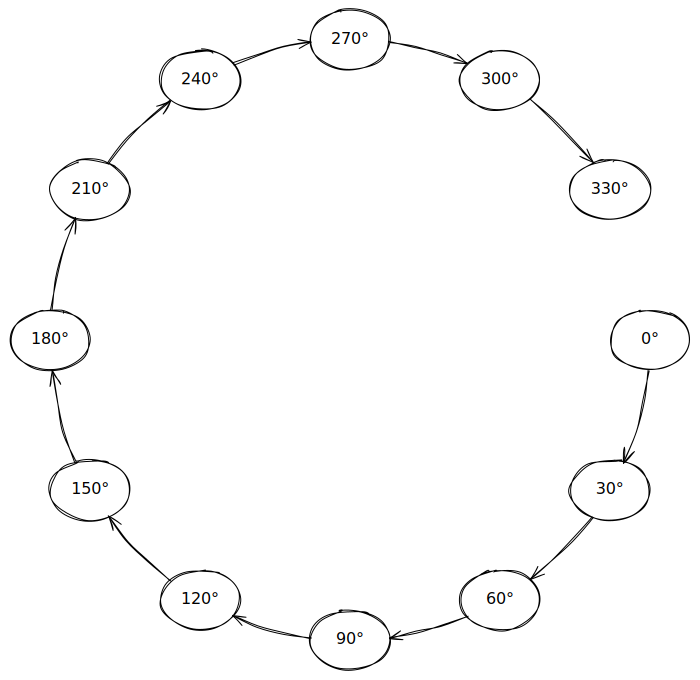
Freeform Connection
Freeform arrows provide a flexible way to connect elements using a series of points. This is ideal for complex diagrams where you need to create a custom path between two points. The line segments can connect to each other in a sharp or rounded way.
START = 50
END = 500
start = scene.ellipse('start').center(0, 0).size(100, 100)
end = scene.ellipse('end').center(530, 0).size(60, 60)
points = [(START, 0), (300, -30), (250, 30), (END, 0)]
scene.arrow().points(points).bind(start, end).roundness('sharp')

For example, you can generate the points using harmonic functions:
START = 50
END = 500
NUM_POINTS = 30
NUM_CYCLES = 5
points = [(
x := START + (t := i / (NUM_POINTS - 1)) * (END - START),
(envelope := 50 * math.sin(math.pi * t)) * math.sin(2 * math.pi * NUM_CYCLES * t))
for i in range(NUM_POINTS)]
start = scene.ellipse('start').center(0, 0).size(100, 100)
end = scene.ellipse('end').center(530, 0).size(60, 60)
scene.arrow().points(points).bind(start, end)

Typography (Text)
You have already seen some text labels in the previous examples. Those labels used the default font and default styling.
E.g. the code rectangle('Hello') creates a rectangle with the text 'Hello' in it, rendered in the default font and styling.
If you want to create a text label using non-default font and styling, you need to create a text element using the text() instead of using a plain text string.
Fonts
The following fonts are available in Excalidraw:
- Excalifont
- Comic Shaans
- Lilita One
- Nunito
- Hand-drawn
- Normal
- Code
for i, font in enumerate(['Excalifont', 'Comic Shaans', 'Lilita One', 'Nunito', 'Hand-drawn', 'Normal', 'Code']):
scene.text(f"{font}").center(0, i * 20).font(font)
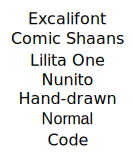
Font Size
You can set the font size using the .fontsize() method. The available sizes are 'S', 'M', 'L', and 'XL'.
You can also get the size of a text element using the size() method without any arguments.
y = 0
for size in ['S', 'M', 'L', 'XL']:
text = scene.text(f"Excalifont ({size})").font('Excalifont').center(0, y).fontsize(size)
w, h = text.size()
y += h

Color
Let's create a non-default text label for an element apply some color to it.
colored_text = (scene.text("Hello, World!")
.font('Lilita One')
.fontsize('L')
.color('Violet')
)
scene.rectangle(colored_text).size(200, 100).center(0, 0)

Layout Helpers
Justification
y = 0
for baseline in ['top', 'middle', 'bottom']:
x = -300
for align in ['left', 'center', 'right']:
scene.rectangle(scene.text(f'{align}-{baseline}').align(align).baseline(baseline)).size(200, 120).center(x, y)
x += 300
y += 150

Anchoring
def cross(center: tuple[float, float], color: str) -> None:
x, y = center
scene.line().points([[x - 20, y], [x + 20, y]]).color(color)
scene.line().points([[x, y - 20], [x, y + 20]]).color(color)
scene = SceneBuilder()
x = 42.0
y = 0.0
for h_align in ["left", "center", "right"]:
for v_align in ["top", "middle", "bottom"]:
cross((x, y), 'red')
scene.text().anchor(x, y, h_align, v_align).content(f"{h_align}-{v_align}").fontsize("M").font("Hand-drawn").color("black")
y += 60.0
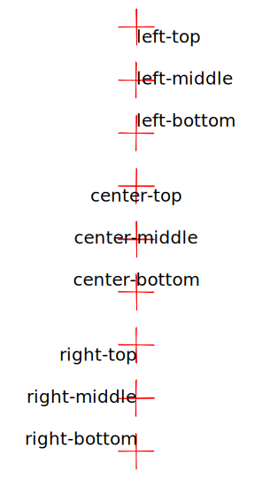
Text needs to be placed precisely.
justify(x, y, w, h)Aligns text within a box.anchor(x, y, h_align, v_align)Anchors text to a point (e.g., top-left).
Lines & Custom Shapes
The Line object accepts a list of points. It uses 'round' interpolation between points by default.

Custom Polygons
The Line object has a convenience method .close() to connect the last point to the first. This creates a shape that can be filled.
points = [[-100, 0], [100, 0], [0, -100]]
(
scene.line()
.points(points)
.close()
.background('lightgreen')
.fill('cross-hatch')
.color('darkgreen')
.roundness('sharp')
.thickness('bold')
)

Example of a more complex polygon:
OUTER_R = 80
INNER_R = 35
NUM_POINTS = 10
star_points = [(
(r := (OUTER_R if i % 2 == 0 else INNER_R)) * math.cos(theta := i * (2 * math.pi / NUM_POINTS)),
r * math.sin(theta)
) for i in range(NUM_POINTS)]
scene.line().points(star_points).close().roundness('sharp')
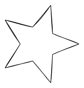
Images
Sometimes you need to include images in your scenes. You can do this using Image objects. Excaligen supports loading images from files, URLs, or even directly from data.
Loading Images from Files
The following example shows how to load an image from a file and combine it with text.
scene.image().file("assets/robot.svg").center(0, 0)
scene.text("Oh look, I'm expressing joy").center(0, -150)
scene.text("how utterly revolting").center(0, 130)
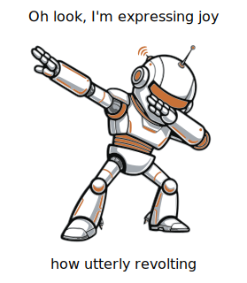
Loading Images from Data
You can provide the image data directly. The following example shows how to load an SVG image from a string
IMAGE_DATA = '''
<svg xmlns="http://www.w3.org/2000/svg" width="467" height="462" stroke="#000" stroke-width="2">
<rect x="80" y="60" width="250" height="250" rx="20" fill="#F80"/>
<circle cx="310" cy="290" r="120" fill="#00F" fill-opacity=".7"/>
</svg>'''
scene.image().data(IMAGE_DATA)
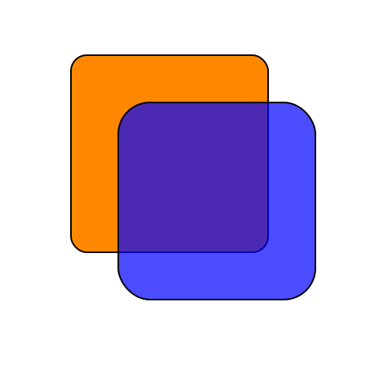
You can load images from binary data as well, but that is outside the scope of this guide.
Loading Images from URLs
Fitting Images
You can fit images to a specific size using the .fit(w, h) method. This way you don't need to take care of the image size and its aspect ratio, while putting the image in a certain box.
scene.rectangle().size(200, 160).center(0, 0)
scene.image().file('assets/robot.svg').fit(140, 140).center(0, 0)
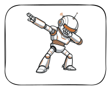
Groups & Frames
Organizing elements is key for complex diagrams. Excaligen supports Excalidraw's Groups and Frames.
Groups
A Group is a virtual container. Elements in a group are treated as a single unit when moving or selecting them in Excalidraw.
face = scene.ellipse().center(0, 0).size(120, 120).background('Yellow').fill('solid')
eye_l = scene.ellipse().center(-20, -15).size(15, 25).background('Black').fill('solid')
eye_r = scene.ellipse().center(20, -15).size(15, 25).background('Black').fill('solid')
mouth = scene.line().points([(-40, 10), (-15, 35), (15, 35), (40, 10)]).thickness('bold')
scene.group().elements(face, eye_l, eye_r, mouth)
Frames
A Frame is a visual container that physically surrounds its content. It has a background color and a title. It's perfect for distinct sections of a diagram or creating presentation slides.
The following example also demonstrates how to generate links. Excalidraw supports external links and links to other elements in the same scene. As the frame is also an element, it can be linked to.
first_frame = scene.frame("Frame 1")
second_frame = scene.frame("Frame 2")
headline_first = (
scene.text("First Slide")
.center(0, -150)
)
circle_with_link = (
scene.ellipse()
.size(50, 50)
.background("Green")
.fill("solid")
.center(0, -100)
.link("https://www.google.com")
)
button_next = (
scene.rectangle("Next")
.size(100, 50)
.background("LightBlue")
.fill("solid")
.center(0, 0)
.link(second_frame)
)
headline_second = (
scene.text("Second Slide")
.center(0, 300)
)
button_back = (
scene.rectangle("Back")
.size(100, 50)
.background("LightBlue")
.fill("solid")
.center(0, 400)
.link(first_frame)
)
first_frame.elements(headline_first, circle_with_link, button_next)
second_frame.elements(headline_second, button_back)

Defaults
What if you want to use specific styles for several elements, but you don't want to type e.g. stroke('solid'), fill('solid'), etc. for each element?
Excaligen provides the Defaults object for this purpose. Let's take the same setup we used in the first chapter, but this time, we'll override the defaults and apply our own styling:
(
scene.defaults()
.stroke('solid')
.thickness('bold')
.fill('solid')
.roundness('round')
.sloppiness('architect')
.font('Nunito')
)
central_topic = scene.ellipse('Central topic').center(0, 0)
subtopic = scene.rectangle('Subtopic').center(350, 100)
scene.arrow('points to').bind(central_topic, subtopic)
Algorithmic Generation
The true power of Excaligen lies in automation. Below are real-world examples of generating complex diagrams programmatically. You can find the source code for these examples in the 'examples' directory.
Mind Map Example

Workflow Example

Pie Chart Example
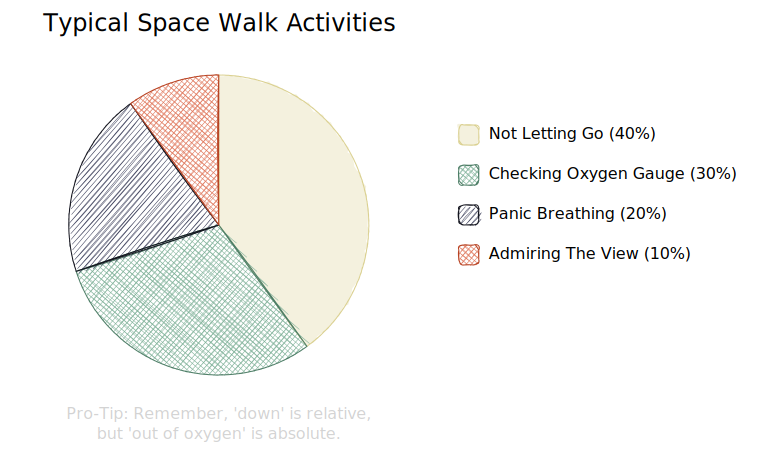
Curves and Arrows Example

Beyond Diagrams
You are not limited to creating diagrams. Excalidraw is a tool for creative people and so is Excaligen. Can you guess what the following code generates?
D = 42 * (42 * (42 * (42 * (42 * (42 * (42 * (42 * 3) + 25) + 26) + 2) + 28) + 30) + 8)
for y in range(8):
for x in range(11):
if (D >> ((y * 6) + abs(5 - x))) & 1:
s.rectangle().position(x * 42, y * 42).size(42, 42).color('#ff4242').background("#ff4242").fill("solid").roundness('sharp').sloppiness('architect')
After running the last example code you know the "Answer to the Ultimate Question of Life, the Universe, and Everything" 😀
And that's a wrap! 🎉 You've made it to the end of the guide. You now have everything you need to start generating beautiful Excalidraw scenes from your Python code.
Have fun with Excaligen.